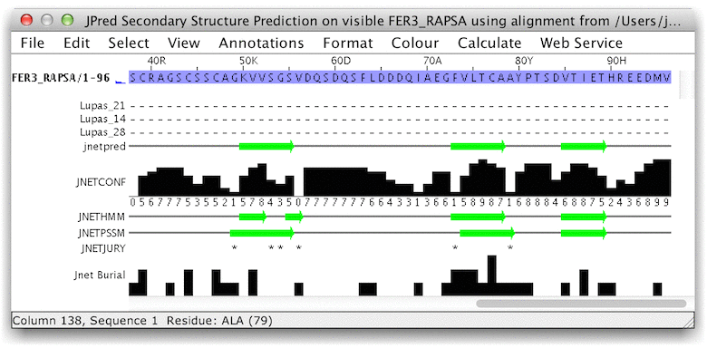

JPred Secondary Structure Prediction
Secondary structure prediction methods attempts to infer the likely
secondary structure for a protein based on its amino acid
composition and similarity to sequences with known secondary
structure. The most recent version of the method, JPred4, employs a
series of neural networks trained to predict different secondary
structure types from a sequence profile, and when necessary, employs
a jury network to identify the most likely secondary structure
prediction.
- Drozdetskiy A, Cole C, Procter J & Barton GJ. (2015)
JPred4: a protein secondary structure prediction server
Nucleic
Acids Research, Web Server issue (first
published 15th April 2015)
http://dx.doi.org/10.1093/nar/gkv332
- Cole C., Barber J.D. and Barton G.J. (2008) The Jpred 3
secondary structure prediction server Nucleic Acids
Research 36 W197-W201
- Cuff J. A and Barton G.J (1999) Application of enhanced
multiple sequence alignment profiles to improve protein secondary
structure prediction Proteins 40 502-511
The function available from the
Web Service→Secondary Structure
Prediction→JPred Secondary Structure Prediction menu does two
different kinds of prediction, dependent upon the currently selected
region:
- If nothing is selected, and the displayed sequences appear
to be aligned, then a JPred prediction will be run for the first
sequence in the alignment, using the current alignment. Otherwise
the first sequence will be submitted for prediction.
- If just one sequence (or a region on one sequence) has been
selected, it will be submitted to the automatic JPred prediction
server for homolog detection and prediction.
- If a set of sequences are selected, and they appear to be
aligned, then the alignment will be used for a JPred prediction on
the first sequence selected in the set (that is,
the one nearest the top of the alignment window).
Note: JPred secondary structure prediction is a
'non-column-separable' service - predictions are based on the
sequence profile of contiguous stretches of amino-acid sequence. A
prediction will only be made on the visible parts of a sequence (see
hiding columns) as if
it were a contiguous polypeptide chain. Prediction accuracy at the
hidden column boundaries may therefore be less than indicated by
JPred's own reliability score (see below).
The result of a JPred prediction for a sequence is a new
annotated alignment window:

The sequence for which the prediction was made is the first one
in the alignment. If a sequence based prediction was made then the
remaining sequences in the alignment are the aligned parts of
homologs which were used to construct a sequence profile for the
prediction. If the prediction was made using a multiple alignment,
then the original multiple alignment will be returned, annotated
with the prediction.
The annotation bars below the alignment are as follows:
- Lupas_21, Lupas_14, Lupas_28
Coiled-coil
predictions for the sequence. These are binary predictions for
each location.
- Jnet Burial
Prediction of Solvent
Accessibility. levels are
- 0 - Exposed
- 3 - 25% or more S.A. accessible
- 6 - 5% or more S.A. accessible
- 9 - Buried (<5% exposed)
- JNetPRED
The consensus prediction -
helices are marked as red tubes, and sheets as dark green
arrows.
- JNetCONF
The confidence estimate for the
prediction. High values mean high confidence. prediction -
helices are marked as red tubes, and sheets as dark green
arrows.
- JNetALIGN
Alignment based prediction -
helices are marked as red tubes, and sheets as dark green
arrows.
- JNetHMM
HMM profile based prediction -
helices are marked as red tubes, and sheets as dark green
arrows.
- JNETPSSM
PSSM based prediction - helices
are marked as red tubes, and sheets as dark green arrows.
- JNETJURY
A '*' in this annotation
indicates that the JNETJURY was invoked to rationalise
significantly different primary predictions.
JPred annotation created in Jalview 2.8.2 and later versions
can be displayed on other alignments via the Add reference
annotation Sequence ID popup menu option.
As of Jalview 2.6, the JPred service accessed accessed via
the 'Secondary structure prediction' submenu should be considered a
legacy Jalview SOAP service, and will be replaced in the near future
by a JPred4 Rest service.